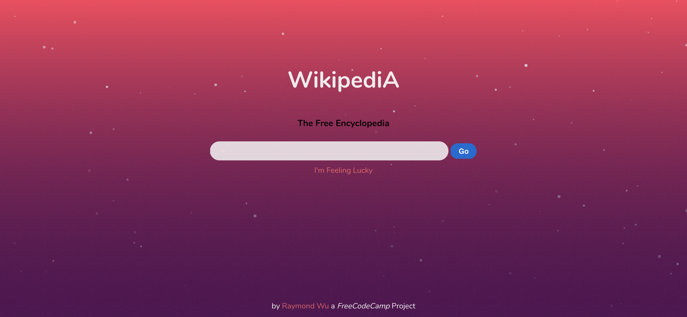

Pharmacist / Aspiring Developer
Hi, I'm Raymond! I'm interested in full-stack web development, graphic design, integrated systems, data visualization.
Technical Skills
I'm a self-taught developer with experience in HTML5, CSS3, and ES6. I devote a lot of my free time to self-education by building personal projects. Feel free to have a look here, and on my Github repositories

HTML

CSS

Sass

JavaScript

React

Node.js

SQL

Python

Command Line

Git

Automation

Linux
Experience
Some of the professional positions I've held.
Clincal Analyst - Willow | Beacon
Serve as knowledge expert in medication and pharmacy-related technical build strategies to bring hospital system onto and maintain their Epic EHR environment.
- Extensive experience with medication build, optimization and system configurations including new medication build, order sets, medication and preference lists, best practice advisories, interaction settings, alternative alerts, custom system rules
- Completed the Go-Live of Epic Beacon Oncology at St Francis Hospital, St Francis Infusion Center, and St Francis Oncology Associates three months ahead of schedule.
- Implemented automated patient scoring systems, which proactively determine the acuity of a patient's acute condition, likelihood of deterioration, and readmission risk.
- Extensive experience with Alert fatigue management. Reduced alert fatigue by decreasing total alerts by 25%, and improved clinician trust in alerts by reducing override rate from 98% to 90%

Pharmacist - Level 2
Inpatient Pharmacist, expert in ensuring the bulk amount of custom IV admixtures were necessary to supply hospital demand.
- Developed of standard of procedure forms to ensure appropriate and accurate work flow for teams
- Verified hundreds of orders per shift for a high volume institution
- Compiled and maintained intravenous preparation admixture stability data
| Project | Description |
|---|---|
| Project was built using VanillaJS. The program features two modes of play, a counter that displays the round, and use of the HTML Audio element. | |
| Project was built using VanillaJS and some jQuery. The game features an option of competitive versus mode, or a match against the computer. The AI was designed using a minimax algorithm to recursively calculate the best possible move based on the current board. | |
| A simple Pomodoro Clock application built utilizing vanilla JS. Utilized the native JS Date Object extensively. | |
| A TwitchTv application built utilizing vanilla JS and the TwitchTv API. User is able to add new streams to their list and jump right to the streamers channel from the card. The UI was built using Material Design principles. | |
| A simple calculator application built utilizing vanilla JS. Inspired by the Android Calculator, I followed their material design by implementing the CSS with Flexbox. | |
|  | A Wikipedia previewer that utilizes the MediaWiki API for the query. |
| A local weather application utilizing vanilla JS and the Open Weather API. Practiced using Flexbox for a modern user-friendly UI. Features on-click temperature conversion. | |
| This is a random quote generator using a JSON-encoded, third-party API. The user can request additional quotes by clicking the "Get Quote" button. Quotes are Tweetable, and trimmed as necessary to meet Twitter character count limitations. | |
| “Catch of the Day” is a client-side application that is built with ReactJS and Firebase. It is a real-time app for a trendy seafood market where price and quantity available are variable and can change at a moment's notice. Using ReactJS, I built a menu, an order form, and an inventory management area where authorized users can immediately update product details. | |
| “Dang Thats Delicious" is a full stack web apps with Node.js, Express, MongoDB, Passport JS. Users can search, geolocate, review and curate their favourite restaurants from around the world. The application has three main relational models — Users, Stores and Reviews. It is designed with user authentication, database storage, Ajax REST API, file upload and image resizing. | |
| Leveraging NodeJS, this is a responsive, mobile-first landing webpage. I utilized BEM & PostCSS techniques to keep the CSS styles organized and manageable. I have also picked up modern skill-sets and technologies throughout the development of this site, such as: Git, Gulp, babel, css, normalize, postcss, webpack, waypoints, javascript, jquery, svg, sprite, autoprefixer, lazysizes, and browser-sync. | |
| The final project for my Full Stack Bootcamp. Using NodeJS, Express, MongoDB, and a RESTful architecture, I created a web app with full CRUD support that is focused on showing campgrounds to a user. User's can register for an account, login, add new campgrounds, comment on other campgrounds, and delete campgrounds the users own. |
Contact
It is critical that I find a team with similar interests and passions. I welcome any and all code critique, mentorship opportunities, and help with coding best practices.
I'd love to hear from you! Fill out the form below, email me at raywupharmd@gmail.com, or find me on Twitter or GitHub.